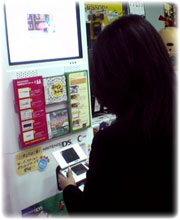

|
|
|
|
全国のゲーム店、量販店等に設置された
ニンテンドーWi-Fiコネクション専用の筐体。
今回は『おいでよ どうぶつの森』の通信プレイをするため、
編集長みずから"おでかけ"してきました！
|

店頭に設置してある筐体は白くて背が高いので、店内に入ればすぐに目が行きます。
近くに立って、ニンテンドーDSを取り出したらいざプレイ開始。
事前に友達から教えてもらっておいた『ともだちコード』を入力して、約束の時間を待ちましょう。
立ち位置によって通信状態の良い場所が微妙に違うようなので、良さそうなポイントを探りつつ待機です。
約束の時間になったら、自分がどの友達の村へ遊びに行くのか、またはあちらに来てもらうのかを選択します。
招待する側の人は村のもんばんさんに話して扉を開けておいてもらうこと。
……ということで、今回は自分の村に友達をご招待。
ちょっとだけ接続待機に時間がかかりましたが、ワクワクしながら待っていると、向こうから"ともだち"登場！
こんなことならもっと村に手間ひまかけておくんでしたー！ と、ちょっぴり後悔するほどの嬉しさです。
ここで初めて開発スタッフさんたちが言っていた『自分の村に人が来ると、すごく感動する』という言葉の意味を実感。
「なにしましょうか」「つりとかする？」と、オールひらがなでのチャットをしつつ、フラフラと村の中を徘徊します。
特別なことをしなくても、一緒に村のなかを走り回るだけでかなり楽しいものです。いや、ホントに。
自分の持ってるどうぐを自慢されたり、村の様子を観察されたりしているうちに、あっという間のプレイ時間は経過していきました。
この時は相手と電話をしながらだったのですが、動作のタイムラグもストレスもなく、スムーズに遊べましたよー。
接続自体はかなり簡単なので、ソフトとニンテンドーDS本体さえあれば、友達との楽しい時間を共有できるというわけです。
自宅での接続もいいし、外出先でちょっと…という遊び方もできるし、自分オリジナルの楽しみ方を味わって下さいね！
|
| （取材協力：ムラウチ電気 八王子本店） |
|
|
|

|
|